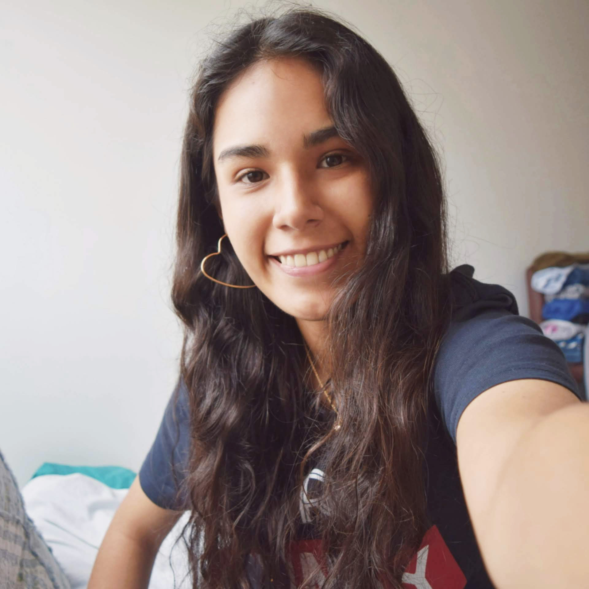
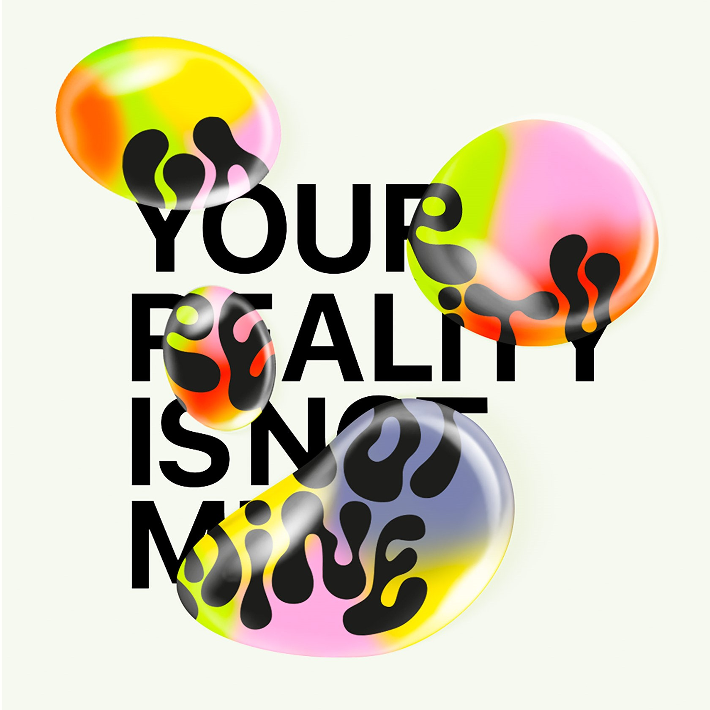
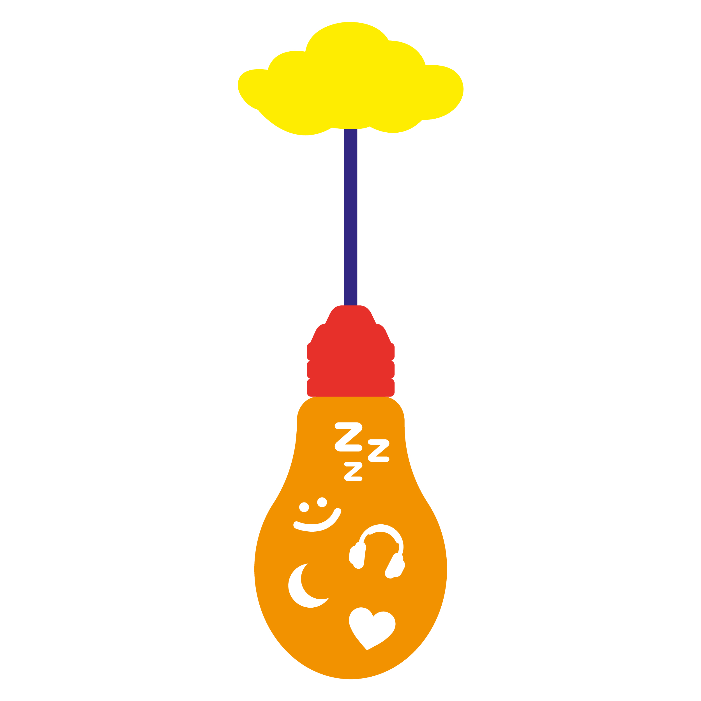

Sobre mí
Me llamo Luciana González, pero normalmente me dicen Lu. Actualmente tengo 24 años y estoy cursando el 8vo ciclo de la carrera de Dirección y Diseño Gráfico en la Escuela Toulouse Lautrec. Las cosas que más disfruto hacer en mis tiempos libres son bailar, tomar fotografías, viajar con mis amigos y ver películas o series. Me considero una persona espontánea, emocional, ocurrente y con un criterio muy abierto, por lo que me gusta estar y crear un ambiente tranquilo en donde esté libre de prejuicios. Al día de hoy las personas que mantengo a mi alrededor las considero parte de mi familia, y con esto siento que mis actidudes y mentalidad se han nutrido de mi círculo social de forma positiva.

Sobre mi carrera
A lo largo de todos estos años cursando la carrera de Dirección y Diseño Gráfico, he fortalecido mis capacidades técnicas como para desarrollarme en varias ramas, pero en lo particular me gustaría especializarme en las áreas de Diseño Editorial e Ilustración. Asimismo, quisiera a futuro poder utilizar mis conocimientos para crear una marca de ropa con diseños propios. Por otro lado, sobre el curso de Laboratorio de Innovación 2, una idea de proyecto que me gustaría desarrollar en este ciclo es un detector que, según la proximidad de otro vehículo (carro, moto, etc.), emita un sonido o luz con el fin de proteger al ciclista y su bicicleta al momento de manejarla.

Sobre la actividad
La actividad grupal consistió en crear un dibujo con el que nos identifiquemos todos en conjunto, no obstante cada uno podía otorgarle un significado distinto. Nosotros decidimos que cada uno escoja un símbolo que los represente y en mi caso elegí un corazón, ya que me considero una persona muy apasionada en cualquier aspecto de mi vida. Luego, todos los símbolos que elegimos estarían repartidos dentro de un foco que significaba la luz que nos mantiene despiertos en nuestro día a día. Decidimos que nuestro foco se sostenga por una nube, mostrando así que el cielo es el límite para nosotros. Finalmente, elegimos una paleta de colores cálidos que puedan reforzar nuestra idea.